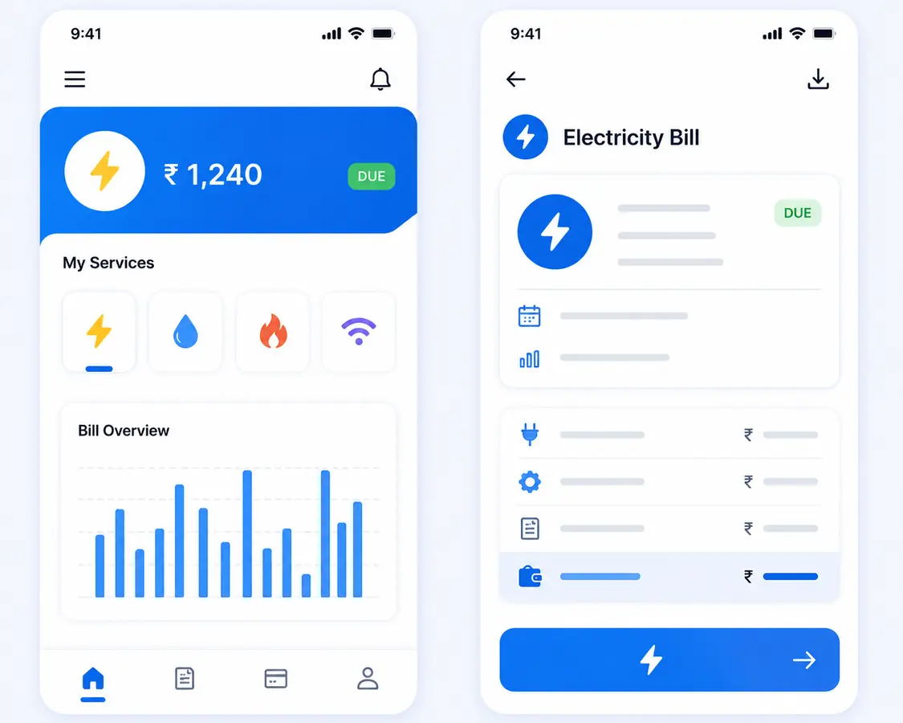

AI · ANALYTICS · BUSINESS SYSTEMS
I turn messy problems into systems people can use.
I combine business context, Python, SQL, machine learning, AI agents, dashboards, APIs, and cloud workflows to build decision systems that turn complex information into clear action.
Python + SQL
Data workflows
GenAI
Agent systems
ML
Predictive models
BI
Decision dashboards
Python
✦
SQL
✦
Generative AI
✦
Vertex AI
✦
FastAPI
✦
Power BI
✦
Machine Learning
✦
GCP
✦
Tableau
✦
REST APIs
✦
Python
✦
SQL
✦
Generative AI
✦
Vertex AI
✦
FastAPI
✦
Power BI
✦
ABOUT / 01
Technical enough to build.
Business-minded enough to know
what matters.
My work sits between analytics, AI, software, and operations. I like problems where the question is unclear at first and the useful answer requires more than simply building another dashboard.
I start by understanding the workflow, identify the real decision that needs to be improved, prepare the data, build the right technical solution, and make the result easy for non-technical people to use.
EXPERIENCE / 02
Work that shaped how I solve problems.
JUL 2026 — PRESENT
Data Operations Analyst
Pinnacle Arc LLC
Working with operational datasets using SQL, Python, Excel, and Power BI to improve data quality, reporting consistency, and business decision-making.
- Validate and reconcile operational data across multiple systems.
- Investigate missing, duplicate, and inconsistent records.
- Build recurring reports and translate reporting issues into corrective actions.
JAN 2023 — MAY 2024
Data & Operations Analyst
Shreeji Plast
Worked in a manufacturing environment across production, inventory, materials, ERP data, and scheduling workflows.
- Reconciled ERP and Excel records across materials, inventory, and production.
- Identified shortages, bottlenecks, schedule exceptions, and inconsistent inputs.
- Converted operational information into structured reports and clear follow-up actions.
SELECTED WORK / 03
Projects built around real decisions.
Nine selected AI, analytics, operations, and machine learning projects, ordered from strongest end-to-end systems to specialized analysis.
01

AI DECISION AGENT · 2026
ParkSafe AI
Built a real-time parking decision agent that combines LADOT occupancy and inventory, Google Places and Routes, price, walking time, ratings, and risk signals to rank the five strongest parking choices.
5ranked options
LiveAPI inputs
PythonGeminiVertex AI
ElasticsearchREST APIs
02

AI BUSINESS APPLICATION · 2025
Dental Office AI Growth Strategist
Created an end-to-end decision application that combines revenue prediction, what-if analysis, an interactive interface, API workflows, and AI-generated recommendations for dental-office growth planning.
PythonFastAPIStreamlit
scikit-learnGenAI
03
MODEL PERFORMANCE
0
R² = 0.919
PREDICTIVE ANALYTICS · 2026
Climate Risk Copilot
Validated 1,080 observations and built a Random Forest model that translated predictions into Low, Emerging, High, and Critical risk groups for clearer operational prioritization.
0.919R² score
4.81MAE
PythonRandom ForestPower BI
Risk Segmentation
04
Cancellation Model
0.956 AUC
ML + BUSINESS INTELLIGENCE · 2026
Hotel Booking Cancellation Analytics
Analyzed occupancy, demand, and cancellation behavior, then built a Random Forest model and business dashboard to identify high-risk bookings and support capacity and revenue decisions.
0.843F1 score
0.956AUC
PythonRandom ForestPower BI
Excel
05
RECORDS CHECKED
7,043
customer rows
CHURN RATE
26.5%
1,869 customers
DATA QUALITY + BI
Telecom Churn Monitoring Dashboard
Built a repeatable SQL and Python validation workflow across 21 fields, applied 14 quality checks, isolated billing exceptions, and created a Power BI view of churn patterns and monitoring priorities.
14validation checks
0duplicate IDs
SQLPythonPower BI
Data Quality
06
TIME WINDOW
10 yrs
2007–2017
MARKETS
4
U.S. states
HOUSING + LENDING ANALYTICS
HMDA Mortgage Lending Analytics
Examined mortgage applications and housing-market patterns across Texas, Ohio, New York, and California to compare lending activity, approval outcomes, and long-term changes from 2007 through 2017.
PythonSQLTableau
Power BIHMDA
07

ANOMALY DETECTION · 2025
Utility Bill Anomaly Detection
Automated utility-bill monitoring with rolling baselines, statistical thresholds, occupancy-normalized costs, and step-change rules to flag abnormal consumption for operational review.
3σZ-score rule
30%+step-change flag
PythonAnomaly DetectionAutomation
CSV Pipeline
08

FRAUD ANALYTICS
Credit Card Fraud Detection Pipeline
Developed a SQL preprocessing and transaction-validation pipeline, tested supervised and anomaly-detection methods for imbalanced fraud data, and translated model outputs into a Power BI risk dashboard.
SQLPythonSMOTE
Isolation ForestPower BI
09
CONVERSATIONAL AI
Vertex AI Salon Service Chatbot
Built a customer-service chatbot for service, pricing, availability, and booking questions, then refined prompt behavior using interaction patterns and clear escalation paths.
Vertex AIGeminiPrompt Design
Customer Analytics
CAPABILITIES / 04
I build across the full decision stack.
AI & Machine Learning
AI agents, LLM applications, prompt workflows, predictive models, NLP, anomaly detection, model evaluation, and explainable outputs.
Analytics & BI
SQL, Python, Power BI, Tableau, KPI development, forecasting, validation, dashboards, and business analysis.
Operations & Systems
Process analysis, ERP workflows, inventory, scheduling, root-cause analysis, automation, reporting, and operational decision support.
EDUCATION / 05
Academic foundation.
University of Texas at Dallas
M.S. Business Analytics & Artificial Intelligence
Indus University
B.S. Data Science
GPA 3.8 / 4.0CONTACT / 06
Have a messy problem?
That’s usually where I start.
I’m interested in AI, data, analytics, technical consulting, business intelligence, and operational problem-solving roles.